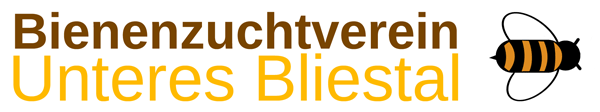

Bienenzuchtverein Unteres Bliestal
The Bienenzuchtverein Unteres Bliestal is an association for beekeepers in the area Gersheim. To keep bees is a very interesting hobby that helps nature, is special and calming.
Read more
Niedergailbach
Niedergailbach is a small village in the German state of Saarland and belongs to the community of Gersheim in the Saarpfalz-Kreis. In 2000 it had 581 inhabitants. Located on the border with France, it is adjacent to the French village of Obergailbach.
Read moreMy Instructor
Prof. Hendrik Speck
Read more